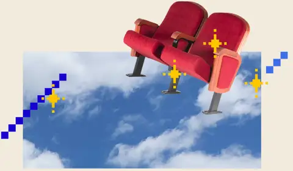

Saturday, February 20, 2027
10:00 AM – 7:30 PM
Sarratt Cinema, Sarratt Student Center, Vanderbilt University
Get your free ticketTakes 10 seconds · QR ticket by email
Submit your filmvia FilmFreeway
Instagram@pointofvusff
Festival websiteFilms, schedule & more
Sarratt Cinema, Sarratt Student Center, Vanderbilt University
Free · Open to the public